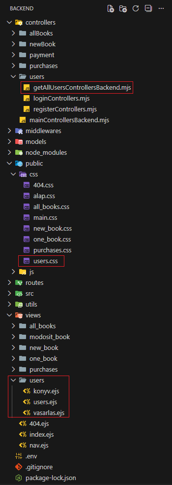

Felhasználók kezelése - bevezetés

Ebben a részben létrehozzuk azt a nézetünket (view), ahol kezelni tudjuk a felhasználókat.
-
Hozzuk létre a következő állományokat:
-
getAllUsersControllersBackend.mjsacontrollers/usersmappában, -
users.ejs,vasarlas.ejséskonyv.ejsaviews/usersmappában, -
users.cssapublic/cssmappában.
 -